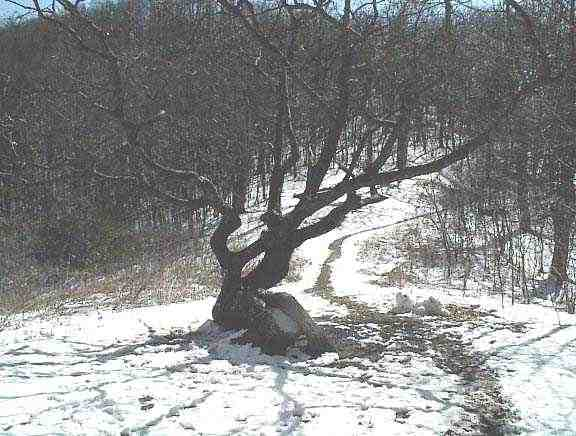

Mid afternoon on March 20, we arrived at Dick's Creek Gap where the AT crosses US 76. We had made good time on this cool foggy day because we were anxious to get here to hitch a ride to our first town stop in Hiawassee. We crossed the highway to a little parking lot with picnic tables and took our packs off. It was a desolate area in the mountains and there seemed to be very little traffic on this winding mountain road.
The town of Hiawassee is about 11 miles west of the trail down in a valley. I have to point out that because we were hiking the AT from south to north, everything to the left of the trail is considered west and everything to the right is east. In actual fact however, the trail goes in a north-easterly direction and often goes to the south and the west as it contours valleys, follows ridgelines and avoids rivers. For ease of reference, all hiker material refers to left as west and right as east, regardless of the actual direction.
The place where we were standing was exposed and we found it much cooler than in the woods. This was our first hitchhiking experience and we were a little apprehensive. We stuck our thumbs out and hoped for the best. The few cars that went by ignored us completely. I decided to take off my hunters-orange baseball cap, thinking it was too hillbilly and would scare away rides. That did not help. Then a car arriving from the west pulled into the parking lot and turned around. It stopped and a hiker got out of the passenger side and unloaded his pack. The driver got out and introduced himself as Gary Poteat from The Blueberry Patch. Gary (a '91 thru-hiker) and his wife own the organic farm/hostel that is only 3.5 miles to the west. We had heard a lot of good things about The Blueberry Patch. It offers a bunk, a great big vegetarian breakfast, shower and a ride back to trail for $17. If one places all dirty clothes in a laundry basket, it is later returned all clean. The hostel does not allow dogs, alcohol, drugs or tobacco. Gary offered us a ride to the hostel but we declined saying that as a couple we were looking for a little privacy. After he left, we started questioning our decision, because time was passing and we were having no luck.
Finally an old Ford Bronco went by and pulled over just beyond us. My first reaction was that maybe we did not want a ride, and I think Ma had a worse reaction. We grabbed our packs and hiking poles and walked up to the vehicle. Two dirty looking men got out and came around back of the vehicle to meet us. They were short and dark and my first (and accurate) impression was that they were Mexican. There was a three foot high pile of construction material and junk in the back. As a result, they could not lower the tail gate. They raised the window above the tailgate, and motioned for us to put our stuff through the window onto the pile. As I put Ma's bag through the window, I remembered the stories of hikers having their stuff stolen in these situations. My solution was to tell Ma in French to get in the truck while I loaded it. (She still has not forgiven me for this great feat of logic.) There was not much room in the back and the window would not shut when the bags were inside. When I went around to get in the truck, I found that one man was sitting in the back seat and Ma was in the bucket seat in the front. It became immediately clear that she was not moving to the back and that the only place for me was in the seat with her. I smiled and explained that I was very comfortable thank you.
The truck was put in gear and rattled and sputtered into motion. It shook and creaked as it started its long winding descent into town. I noticed right away that this vehicle had seen better days. The pedals were worn down to the metal, wires were exposed, and everything was worn and faded. I looked back and noticed my bag which seemed precariously close to the back window. The man in back noticed my apprehension and reached back to grab the straps of the bag. I can still see him sitting sideways in the seat holding onto my bag for the entire 20 minute ride to town.
The man in the back spoke no English whereas the driver spoke very little English and had obvious problems understanding our accents. I tried to explain what we were doing (which is hard to do even without the language handicap) and where we were from, but I am unsure if he understood. As he went by a side road, he indicated that it was the direction he had to go, but he continued on and drove us the few more miles to town. He let us off across the street from the Hiawassee Inn. When our stuff was unloaded, I shook their hands and thanked them for their help. I felt really guilty for having made a quick opinion about them.
The Hiawassee Inn was only $29 per night and included HBO. From then on I always checked to see if HBO was included. We showered and put on clean clothes (called town clothes if it is clothes you keep just to wear in town). We put on our Teva sandals and walked a mile or so to paradise, also known as Daniel's Steak House. All thru-hiker hikers check their guides and handbooks for restaurants that are identified as AYCE, or All You Can Eat. For northbounders, Daniel's is the first AYCE.
When we arrived, SHAVING DAVE was leaving with a group but decided to keep us company while we ate. BADGER and SUNDOG were also here. I asked these two southern boys if the food was a good example of southern cooking and was told that only grandma made better fried chicken. The buffet consisted of fantastic fried chicken, roast beef, okra, assortments of greens, lots of veggies, salads, biscuits and gravy, and dessert. I had to ask lots of questions cause much of it was unfamiliar. Cost per person for this feast was $5.95. While we were eating, FAL and HERCULES arrived. They were still a few days behind us on the trail but had managed to get to Helen Georgia to stay with some friends who drove them to the restaurant. We met FALCON, EAGLE, and KAYBEK who were sharing a room at the more expensive Howard Johnson because it had a laundry and pool and sauna on site. To their dismay, the pool was closed for repairs.
The next morning, we bought our groceries at a large supermarket. Our next re-supply was planned for the Nantahala Outdoor Center (NOC) 70 miles away so we bought about 8 days worth of food. It was not too difficult to calculate how many meals to buy but it was not easy to figure out how much snacks and trail mix, etc. to buy for two people for eight days. I then did laundry at the laundromat down the road. The manager was very talkative and asked me if Canada was part of the USA. She also mentioned that there were lots of Mexicans living nearby. The owner then showed up in her Cadillac. When the manager mentioned I was from Canada, the owner displayed a "been there, done that" attitude. It turns out that on a trip to Maine, she crossed the border at one point and came back by another crossing a little later that day.
Late in the morning we packed our bags and hiked back up the road to Daniel's for another great meal. On the way, a large number of hikers who were hanging out at the local outfitter, waved noisily at us. I have to mention now that a rumour was circulating a few weeks later that five hikers got food poisoning at Daniel's not long after we were there. This was never corroborated. Many of us think that what likely happened was that they overdid themselves in the quantity and type of food at too early a stage in their hike.
After lunch we went and joined the hikers at the outfitters where I bought new socks. We met the two French speaking girls we had heard about, Hélène from Manitoba who was called H and would later become WOODY and her best friend Anne Marie from southern Ontario who would become FARLEY. Also there were their two female friends POCO and NATTY as well as BLUEGRASS (Willie) and his dog DOBRO (Althea) and GRUFF. They were waiting for a ride from the owner of the outfitting shop. WOODY said we would have no problem hitching a ride. She said to just stand at the road and the second or third car would stop. Ma and I walked to the curb and stuck out our thumbs and counted 48 cars. This was one of many occasions where it seemed that the younger hikers were having more success than us. Maybe it was the hat?
The outfitter came out, put an "away" sign on his door and told all of us it was time to go. I looked at his pickup truck with the cap over the back and shook my head in disbelief. We loaded all eight backpacks into the back and then BLUEGRASS ordered DOBRO onto the pile. Then six of us crammed ourselves into the back and the other two went in the cab. It was really crowded with no room for anything else, or so I thought. Rather than head up the mountain he headed to the supermarket where a few got out and came back a little later with a couple of cases of beer and a box of wine. We were then driven back up to the trail.
GRUFF and BLUEGRASS told us about their trail magic. They said when they arrived in Hiawassee, a man stopped and picked them up and brought them to his big beautiful country home just outside of town where they spent the night. He also treated them to a meal at a nice restaurant.
It was over 4 miles from the road to Plumorchard Shelter. Despite having to carry their extra supplies, the other hikers still managed to get there before us. The shelter was very new and would turn out to be one of the nicest ones on the trail. (see attached photo.) The group from the truck had set up their tents away from the shelter and there were also a number of people who had claimed space in the shelter. There were three sleeping areas in the shelter: the floor, a narrow ledge on the back wall which could accommodate two and an area in the roof overhang at the front. As Ma preferred not to climb, EAGLE volunteered to give up his place on the floor and sleep on the ledge. Because the party crowd were set up away from the shelter, we slept well that night.
Among the people in the shelter, was a girl named VULTURE CHOW. In addition to her negative sounding name, she stood out because of the equally negative sign she had painted on the back of her pack. It said: "KATAHDIN OR NEW JERSEY". She had been off the trail in Hiawassee for five days. On the way to Plumorchard she had injured her ankle. Thinking it was broken she had found someone to carry her pack back to the road and then she went to the hospital where she was told it was twisted.
Although she did not stay on the trail too long, there were many stories circulating about VULTURE CHOW during the early stages of the hike. The most frequently heard was that she was "yellow blazing" or hitchhiking (explanation of this and some other trail terms at the end of this episode). Someone would pass her on the trail but when they would arrive in town a few days later, she would already be there.
Another story circulating was that she had obtained a sponsor for her hike by winning an essay contest. Apparently she confided that she had copied her essay from a book about the AT. We met VULTURE CHOW one more time during our trip, at the hostel in Damascus Virginia where she was hanging around, absorbing the hiker atmosphere.
The next morning, in true hiker fashion, the gang crushed and packed out all their empties before leaving. During the day we crossed our first state line into North Carolina at Bly Gap. We knew we were officially there when we saw the gnarled oak sitting in the middle of a grassy clearing. We have always regretted not taking a picture of this magnificent landmark. Attached is a picture taken a few days later by ZIPDRIVE after a snow storm.

Many claimed that an even better sign that we had crossed into North Carolina was the climb out of Bly Gap. We remember the climb as a very steep ascent that never seemed to end. This contrasted with the ascents in Georgia which usually had switchbacks or which rose slowly at an angle up the side of a mountain. A few hikers said that during their climb out of Bly Gap, they met a trail maintainer who welcomed them to North Carolina.
We only hiked 7.5 miles this day. We arrived at Muskrat Creek shelter early in the afternoon giving us lots of time to do our chores and relax. This is a new one-level shelter that sleeps about 7. Attached to the front is a covered cooking/eating area with a picnic table and built in benches around the perimeter. I sat reading the trail register which included an entry by Erin and Ryan (soon to be known as Little Dipper and Irmo). They had spent over two days in their tent here because Ryan was extremely sick with diarrhea and vomiting. Not a good thing to happen in this very remote location. During the afternoon I took a walk down a blue blaze trail trying unsuccessfully to find the site of the wreckage from a small plane that crashed nearby years ago.
As we were first to arrive we had a shelter spot but by night fall there were about 25 hikers. By supper time, there were tents all around the shelter area. I caught a glimpse of HUFFIN and PUFFIN who were in a tent in the nearby woods. One of the persons in the shelter was FREEDOM (Dominique) a young man from Québec that WOODY and FARLEY had told us about. This was our only encounter with him. His prowess on the harmonica was legendary but he did not play that night. He came second in the talent show at Trail Days in Damascus in May. (He was beaten by a hiker who borrowed a bike from a local store and did tricks which included hopping across picnic tables.)
After supper we went and sat with a number of hikers on logs surrounding the large fire pit. One of them was MANGO (short for GO MAN GO). He sat in front of the fire making himself a large batch of spaghetti from scratch. To the pasta he added spices and dried vegetables that he had cooked. It looked really nice compared to our pre packaged meals. Just as he was about to eat, he dropped his pot and the contents spilled on the ground. He picked up the pan and tried to salvage clean portions from amongst the dust and ashes and twigs. He quickly gave up, his big appetite getting the best of him, placed it all back in his pot and proceeded to eat everything.
------------------ The next chapter will include the big snow storm. ---------------------------
Hiking trails are often marked with blazes to show the way.
White Blazes The entire length of the AT is marked with white blazes (6 inches long and 2 inches wide) painted on trees and sometimes on rocks and telephone poles and other objects. They are spaced out according to their need. In open areas, there may be many blazes to keep hikers on the right path. In thicker woods where the path is obvious, the blazes can be few and far between. Two blazes placed one above each other means that there will be a turn, for example, onto another trail or off a road into the woods. In some areas it is used to indicate that the hiker should use caution as the trail is meeting or crossing another trail or road, but may not mean there is a turn. There is a trend in some areas to indicate the direction of turn by having the top blaze slightly to the right or left of the bottom blaze. This will not be a standard until all hiking clubs agree and the trail is completely remarked.
Blue Blazes Side trails are usually marked with blue blazes. These blazes are used in areas where there are many trails which meet or cross the AT. It is also used to mark trails leading to water sources and shelters and to scenic look offs and other landmarks.. In a few cases blue blazed trails provide an alternative route in bad weather, or provide a foot route to a town which is not on the trail. In some cases, taking a blue blaze trail can mean missing a portion of the white blazed trail, unless one backtracks. Hikers who miss part of the trail by taking a blue blazed trail are often called "blue blazers", especially by the AT purists. The insinuation is that blue blazers are taking shortcuts, even though most blue blazed trails will lengthen the trip. Ma and I blue blazed a couple of times. It occurred where there were different trails leading to a shelter.. We arrived by one trail and left by the other one rather than backtrack. The argument made by us and many others was that the total distance on the blue blazed trails was longer than the distance missed on the AT.
Yellow Blazes This refers to the yellow line down the middle of a highway. A yellow blazer is a person who hitch hikes ahead to avoid a portion of the trail. Yellow blazers are usually considered cheaters and were looked down upon unless they were admitting their activities. A few people did this to keep up with faster friends and to keep living the trail experience. All these individuals eventually got off the trail. The most famous yellow blazer is BEORNE who is mentioned in Bill Bryson`s book "A walk in the Woods" and in a number of magazine articles.